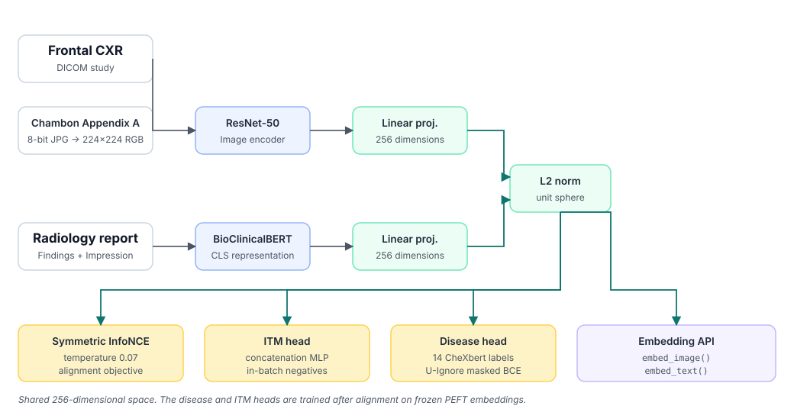
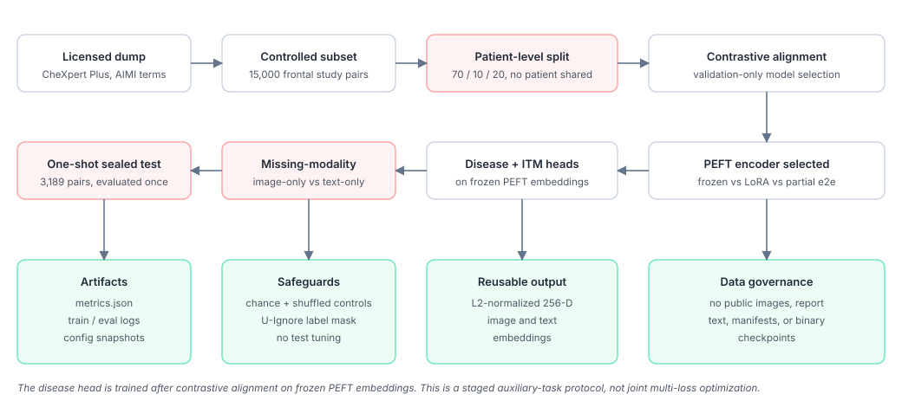
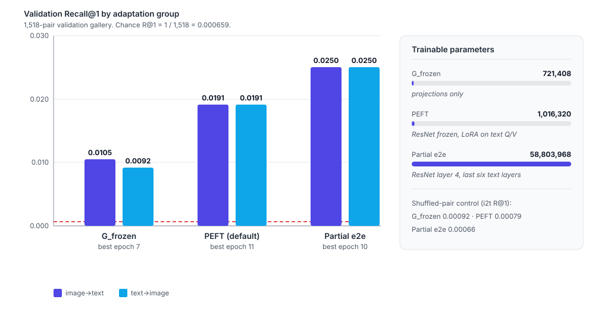
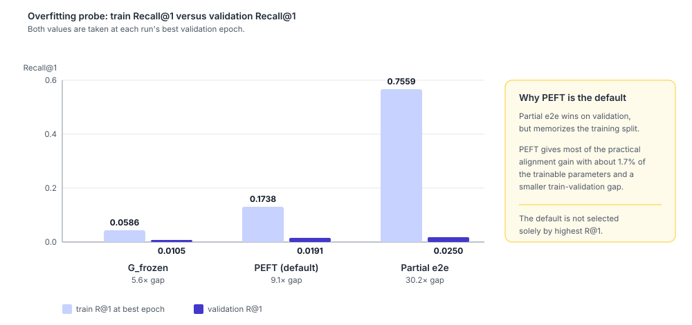
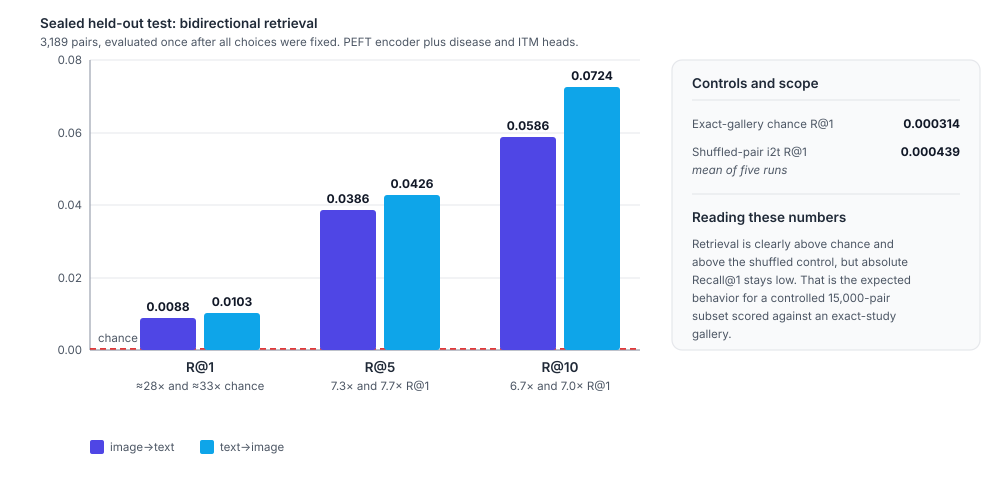
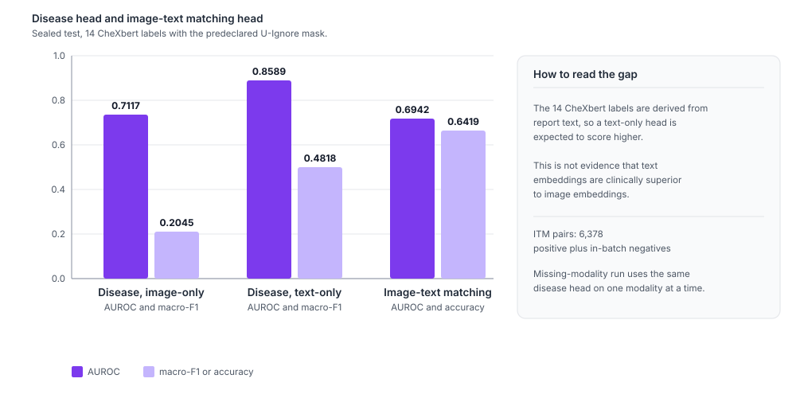
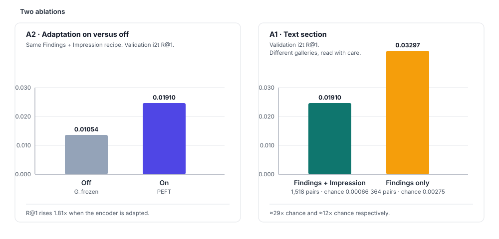
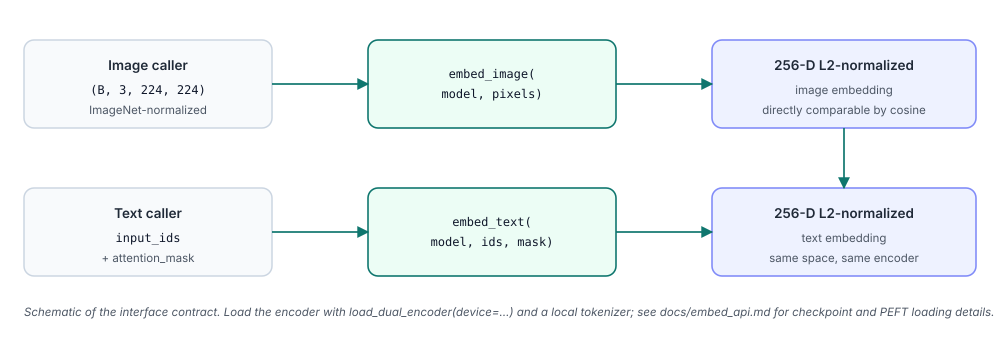

RadPair
Cross-Modal Alignment and Unified Representation Methods
for Medical Imaging and Clinical Text Data
The question
On a controlled 15,000-pair CheXpert Plus subset, can a lightweight ResNet-50 + BioClinicalBERT dual encoder learn useful chest X-ray–report alignment without training a new foundation model?
Abstract
Chest X-ray–report alignment is difficult because reports are long, frequently negative, and partly templated, so a contrastive model can retrieve a plausible report without aligning the image to the specific study. RadPair studies whether that gap can be narrowed cheaply. It evaluates bidirectional retrieval, image–text matching, 14-label disease classification, label uncertainty handling, and missing-modality behavior under one patient-level protocol on a controlled 15,000-pair CheXpert Plus subset, using a ResNet-50 image branch and a BioClinicalBERT text branch trained with symmetric InfoNCE at a fixed temperature of 0.07.
The comparison spans three adaptation recipes: frozen projections, LoRA-based parameter-efficient fine-tuning of the text encoder, and a partially end-to-end configuration, all sharing the same split, preprocessing, loss, batch size, epoch budget, and validation-based early stopping. Training and model selection use validation only; the sealed 3,189-pair test set is evaluated once. Retrieval is reported against exact-gallery chance and a five-run shuffled-pair control, and disease metrics use a predeclared U-Ignore mask for uncertain CheXpert labels.
Parameter-efficient fine-tuning is the shared default: it reaches validation image→text Recall@1 of 0.01910 against 0.01054 for frozen projections and 0.02503 for partial end-to-end training, with roughly 1.7% of the end-to-end trainable parameters and a far smaller train–validation gap. On the sealed test, the selected encoder reaches 0.00878 image→text and 0.01035 text→image Recall@1, about 28× and 33× chance; the 14-label disease head reaches 0.7117 macro-AUROC from image embeddings and 0.8589 from text embeddings; and the image–text matching head reaches 0.6942 AUROC. Absolute retrieval numbers stay low, which is the expected behavior for a controlled subset scored against an exact-study gallery. These results support a documented research pipeline and a reusable shared embedding, not diagnostic deployment.
Research Design
Scientific motivation
Radiology reports are long, mostly negative, and partially templated. A model can therefore score a high-quality-looking report as a good match for almost any study. RadPair addresses this with a deliberately narrow, checkable design:
- Controlled scale: 15,000 frontal study pairs rather than an opaque large-scale run.
- Patient-level separation: no patient is shared across train, validation, or test.
- Honest retrieval baselines: exact-gallery chance and shuffled-pair checks accompany every Recall@K.
- Declared uncertainty policy: uncertain CheXpert labels are masked with U-Ignore before test use.
- Adaptation spectrum: frozen, parameter-efficient, and partially end-to-end recipes are compared.
- Reusable output: normalized 256-dimensional image and text embeddings behind a documented API.


Data
| Source | CheXpert Plus, accessed under its license |
|---|---|
| Controlled subset | 15,000 frontal study pairs |
| Unique patients | 4,965 |
| Split | Patient-level 70 / 10 / 20 |
| Train / validation / test | 10,293 / 1,518 / 3,189 pairs |
| Seed | 42 |
| Text fields | Findings + Impression |
| Labels | 14 CheXbert observations |
| Uncertainty policy | U-Ignore |
| Image preprocessing | Chambon Appendix A → 8-bit JPG → 224×224 RGB |
Adaptation groups
| Group | Trainable components | Trainable parameters | Role |
|---|---|---|---|
G_frozen |
Image/text projections only | 721,408 | Minimal adaptation baseline |
PEFT |
ResNet frozen; LoRA on BioClinicalBERT query/value; projections | 1,016,320 | Efficiency/generalization trade-off, shared default |
| Partial e2e | ResNet layer 4; BioClinicalBERT last six layers; projections | 58,803,968 | Stronger adaptation and overfitting probe |
All groups share the same split, preprocessing, loss, batch size, maximum epochs, and validation-based early stopping. The partial end-to-end group is not full backbone fine-tuning.
Results
Validation: three-way contrastive comparison
Chance Recall@1 on the 1,518-pair validation gallery is 1 / 1,518 ≈ 0.000659.
| Group | Best epoch | Val i→t R@1 | Val t→i R@1 | Shuffle i→t R@1 | Train@best i→t | Interpretation |
|---|---|---|---|---|---|---|
G_frozen |
7 | 0.01054 | 0.00922 | 0.00092 | 0.0586 | Stable but weak alignment |
PEFT |
11 | 0.01910 | 0.01910 | 0.00079 | 0.1738 | Stronger signal with modest overfitting |
| Partial e2e | 10 | 0.02503 | 0.02503 | 0.00066 | 0.7559 | Best validation score, largest train–validation gap |
Train@best Recall is measured on a seeded 512-pair train monitor, not the full training gallery.


Why PEFT is the default. It provides most of the practical alignment gain with roughly 1.7% of the trainable parameters in the partial end-to-end recipe and a smaller train–validation gap. It is not selected solely because it has the highest validation Recall@1.
Held-out results
The sealed test contains 3,189 pairs. Chance Recall@1 is 0.000314; the mean shuffled image→text Recall@1 is
0.000439. The encoder is plus_g_peft_001 with the disease and ITM heads attached.

| Task | Metric | Value |
|---|---|---|
| Image→text retrieval | R@1 | 0.00878 |
| Image→text retrieval | R@5 | 0.03857 |
| Image→text retrieval | R@10 | 0.05864 |
| Text→image retrieval | R@1 | 0.01035 |
| Text→image retrieval | R@5 | 0.04265 |
| Text→image retrieval | R@10 | 0.07244 |
| Disease, image-only | macro-AUROC | 0.71172 |
| Disease, image-only | macro-F1 | 0.20448 |
| Disease, text-only | macro-AUROC | 0.85892 |
| Disease, text-only | macro-F1 | 0.48181 |
| Image–text matching | AUROC | 0.69425 |
| Image–text matching | Accuracy | 0.64189 |

Ablations
| Ablation | Comparison | Validation result |
|---|---|---|
| A2: adaptation on/off | G_frozen versus PEFT, same Findings + Impression recipe |
i→t R@1 0.01054 → 0.01910 |
| A1: text section | Findings + Impression versus Findings-only | Findings-only i→t R@1 0.03297 on 364 validation pairs |

The findings-only ablation uses a smaller validation gallery and a different sample availability rule, so its absolute Recall@1 is not directly comparable with the main validation table. It is approximately 12× its own chance level of 0.00275.
Evaluation safeguards
- Training and model selection use validation only.
- Test rows are refused by the standard data loader unless the evaluation script explicitly enables test access.
- Retrieval is compared with exact-gallery chance and a five-run shuffled-pair control.
- Disease metrics use the predeclared U-Ignore mask.
- After validation-only selection, the held-out test is evaluated once with the selected PEFT encoder plus disease and ITM heads.
- Those test metrics are not used for tuning.
Interpretation
- Retrieval is well above chance and the shuffled control, but absolute Recall@1 remains low. This is expected for a controlled 15,000-pair subset and an exact-study gallery.
- Partial end-to-end training achieves the best validation retrieval score but shows clear memorization risk.
- Text-only disease performance is much higher because the 14 labels are derived from report text; this is not evidence that text embeddings are clinically superior to image embeddings.
- The results support a documented research pipeline and a usable shared embedding, not diagnostic deployment.
Embedding API
The main reusable output is a shared embedding space. Callers own preprocessing: image callers supply
ImageNet-normalized (B, 3, 224, 224) tensors, text callers supply token IDs and attention masks. Both
functions return L2-normalized 256-dimensional embeddings, so image and text vectors are directly comparable by cosine
similarity.

from transformers import AutoTokenizer
from src.api import load_dual_encoder, embed_image, embed_text
device = "cuda:0"
model = load_dual_encoder(device=device)
tokenizer = AutoTokenizer.from_pretrained(
"models/Bio_ClinicalBERT", local_files_only=True
)
# Image caller supplies ImageNet-normalized (B, 3, 224, 224) tensors.
image_embedding = embed_image(model, pixel_values)
# Text caller supplies token IDs and attention masks.
text_embedding = embed_text(
model,
batch["input_ids"].to(device),
batch["attention_mask"].to(device),
)
See docs/embed_api.md in the repository for checkpoint behavior, preprocessing ownership, and PEFT loading details.
Reproduce
Prerequisites
- A licensed CheXpert Plus download, including the source CSV, DICOM files, and CheXbert label file.
- The local, non-public
chexpert_plus_subset/manifest.csvcreated for this study. - One CUDA-capable GPU.
- Python 3.11 and a virtual environment.
- The pinned PyTorch and torchvision wheels target CUDA 12.8; install matching wheels for your platform before
pip install -r requirements.txt.
git clone https://github.com/codewith-rafi/radpair.git
cd radpair
python -m venv .venv
source .venv/bin/activate
# Install the PyTorch wheels for your platform first, then:
pip install -r requirements.txt
huggingface-cli download emilyalsentzer/Bio_ClinicalBERT \
--local-dir models/Bio_ClinicalBERT
export RADPAIR_ROOT="$(pwd)"
export CHEXPERT_PLUS_ROOT=/path/to/chexpert_plusData build
python scripts/write_plus_split_manifest.py \
--split train --out data/processed/plus_train_manifest.csv
python scripts/write_plus_split_manifest.py \
--split val --out data/processed/plus_val_manifest.csv
python scripts/join_plus_chexbert_and_stats.py
python scripts/build_plus_test_manifest.py
# Cache train/validation images.
python scripts/cache_plus_chambon_jpg.py
# Cache held-out test images through the same preprocessing path.
python scripts/cache_plus_chambon_jpg.py \
--train_manifest data/processed/plus_test_manifest.csv \
--val_manifest data/processed/plus_test_manifest.csvTraining and evaluation
export CUDA_VISIBLE_DEVICES=0
# Three comparison groups.
python scripts/train_plus_g1.py --config configs/plus_g1.yaml
python scripts/train_plus_g_peft.py --config configs/plus_g_peft.yaml
python scripts/train_plus_g_e2e.py --config configs/plus_g_e2e.yaml
# Auxiliary heads on frozen PEFT embeddings.
python scripts/train_plus_disease.py --config configs/plus_disease.yaml
python scripts/train_plus_itm.py --config configs/plus_itm.yaml
# Validation analyses.
python scripts/eval_plus_missing_modality.py \
--config configs/plus_missing_modality.yaml
# One-shot held-out evaluation after all choices are fixed.
python scripts/eval_plus_sealed_test.py \
--config configs/plus_sealed_test.yamlTo regenerate the reported tables without retraining, place locally stored checkpoints under the corresponding experiment directories and verify their SHA256 hashes before use.
Repository Map
src/models/ | Dual encoder, disease head, and ITM head |
|---|---|
src/losses/ | Symmetric InfoNCE and masked BCE |
src/data/ | Manifest loading, U-Ignore parsing, and preprocessing |
src/eval/ | Recall@K implementation |
src/api/ | Reusable embedding interface |
scripts/ | Data, training, and evaluation entry points |
configs/ | Run configurations |
experiments/ | Metrics, logs, configuration snapshots, and consolidated result tables |
chexpert_plus_subset/ | Public-safe aggregate metadata only |
docs/ | API documentation and visual-asset guidance |
Data governance
- Obtain CheXpert Plus directly from Stanford AIMI and comply with its access terms.
- Set
CHEXPERT_PLUS_ROOTto the licensed local dump. - Never commit patient-level images, DICOM files, report-text CSVs, manifests, or derived patient identifiers.
- The repository intentionally ships only aggregate metadata and experiment results: no patient images, report text, manifests, or model binaries.
BibTeX
@misc{RadPair2026,
title = {RadPair: Cross-Modal Alignment and Unified Representation Methods for Medical Imaging and Clinical Text Data},
author = {Ahmed, Rafi},
year = {2026},
howpublished = {\url{https://codewith-rafi.github.io/radpair/}},
note = {Code and experiments: \url{https://github.com/codewith-rafi/radpair}},
keywords = {contrastive learning, chest X-ray, radiology report, CheXpert Plus}
}Cite the software repository and this project page. Patient-level data are never redistributed; the licensed CheXpert Plus dump must be obtained separately.
References
- A. Radford et al., “Learning Transferable Visual Models From Natural Language Supervision,” in Proc. ICML, 2021. arXiv:2103.00020
- Y. Zhang, H. Jiang, Y. Miura, C. D. Manning, and C. P. Langlotz, “Contrastive Learning of Medical Visual Representations from Paired Images and Text,” in Proc. Machine Learning for Healthcare (MLHC), 2022. arXiv:2010.00747
- S.-C. Huang, L. Shen, M. P. Lungren, and S. Yeung, “GLoRIA: A Multimodal Global-Local Representation Learning Framework for Label-efficient Medical Image Recognition,” in Proc. ICCV, 2021.
- E. Tiu, E. Talius, P. Patel, C. P. Langlotz, A. Y. Ng, and P. Rajpurkar, “Expert-level detection of pathologies from unannotated chest X-ray images via self-supervised learning,” Nature Biomedical Engineering, vol. 6, pp. 1399–1406, 2022.
- P. Chambon, J.-B. Delbrouck, T. Sounack, S.-C. Huang, Z. Chen, M. Varma, S. Q. Truong, C. T. Chuong, and C. P. Langlotz, “CheXpert Plus: Augmenting a Large Chest X-ray Dataset with Text Radiology Reports, Patient Demographics and Additional Image Formats,” 2024. arXiv:2405.19538
- J. Irvin et al., “CheXpert: A Large Chest Radiograph Dataset with Uncertainty Labels and Expert Comparison,” in Proc. AAAI, 2019. arXiv:1901.07031
- K. You, J. Gu, J. Ham, B. Park, J. Kim, E. K. Hong, W. Baek, and B. Roh, “CXR-CLIP: Toward Large Scale Chest X-ray Language-Image Pre-training,” in Proc. MICCAI, 2023. arXiv:2310.13292
- Z. Wang, Z. Wu, D. Agarwal, and J. Sun, “MedCLIP: Contrastive Learning from Unpaired Medical Images and Text,” in Findings of EMNLP, 2022. arXiv:2210.10163
Contact
Rafi Ahmed
Research Assistant, Machine Intelligence Lab, Sichuan University
codewithrafi@outlook.com ·
GitHub ·
www.machineilab.org